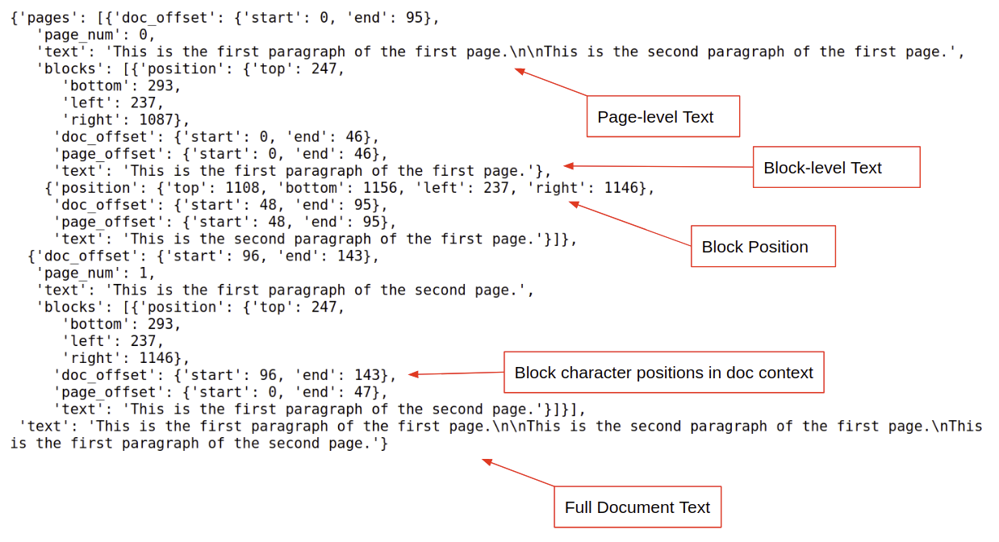

OCR With DocumentExtraction
Introduction
The Indico Platform includes a sophisticated OCR engine that’s capable of extracting raw
text from a variety of document formats including PDF and TIF. OCR functionality is provided
by the DocumentExtraction class. Here’s how to OCR one document with DocumentExtraction:
from indico import IndicoClient
from indico.queries import JobStatus, RetrieveStorageObject, DocumentExtraction
# here, IndicoClient assumes you have your api token in your home directory
# and host set as an env variable
client = IndicoClient()
files_to_extract = client.call(DocumentExtraction(files=['./path_to_document.pdf']))
extracted_file = client.call(JobStatus(id=files_to_extract[0].id, wait=True))
result = client.call(RetrieveStorageObject(extracted_file.result))
In this example, given the path to a document, we called DocumentExtraction with a single file and waited for the result. With most use cases, this is all you will need to do. The returned ‘result’ will either be a dictionary (if document-level text and/or metadata are requested) or a list of dictionaries (where each dictionary contains the text for a unique page/block). The following example demonstrates the output for a PDF document using the ‘standard’ configuration.
DocumentExtraction is highly configurable. You can customize settings at the document, page, block, token or
character level. You can also choose from a selection of preset configurations. You configure DocumentExtraction
by passing in a Python dictionary or JSON string.
Here’s an Example:
my_ocr_config = {
"preset_config": "standard"
}
job = client.call(DocumentExtraction(files=['./path_to_doc.pdf'], json_config=my_ocr_config))
Preset Configurations
Setting:
"preset_config": "simple"
"preset_config": "legacy"
"preset_config": "detailed"
"preset_config": "ondocument"
"preset_config": "standard"
Five preset ocr configurations are provided: legacy, simple, ondocument, standard,
and detailed.
Most users will only need to use “standard” to get both document and page-level text and block positions in a nested response format (returned object is a nested dictionary).
The “simple” configuration provides a basic and fast (3-5x faster) OCR option for native PDFs- i.e. it will not work with scanned documents. Returns document, page, and block-level text and the returned object is a nested dictionary.
The “legacy” configuration is principally intended for users who ran Indico’s original pdf_extraction function to extract text and train models. Use “legacy” if you are adding samples to models that were trained with data using the original pdf_extraction. It returns a dictionary containing only the extracted text at the document-level.
The “detailed” configuration provides OCR metrics and details down to the character level- it’s a lot of data. In addition to document, page, and block-level text, it provides information on the text font/size, confidence level for extracted characters, alternative characters (i.e. second most probable character), character position information, and more. It returns a nested dictionary.
“ondocument” provides similar information to “detailed” but does not include text/metadata at the document-level. It returns a list of dictionaries where each dictionary is page data.
The exact settings included in “legacy”, “simple”, “ondocument”, “standard”, and “detailed” are shown on the DocumentExtraction Settings page.
There are many, many more settings available in DocumentExtraction to suit your application.